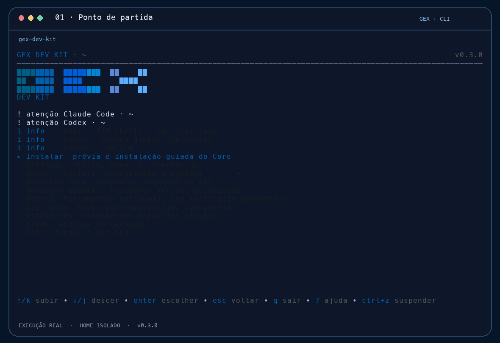
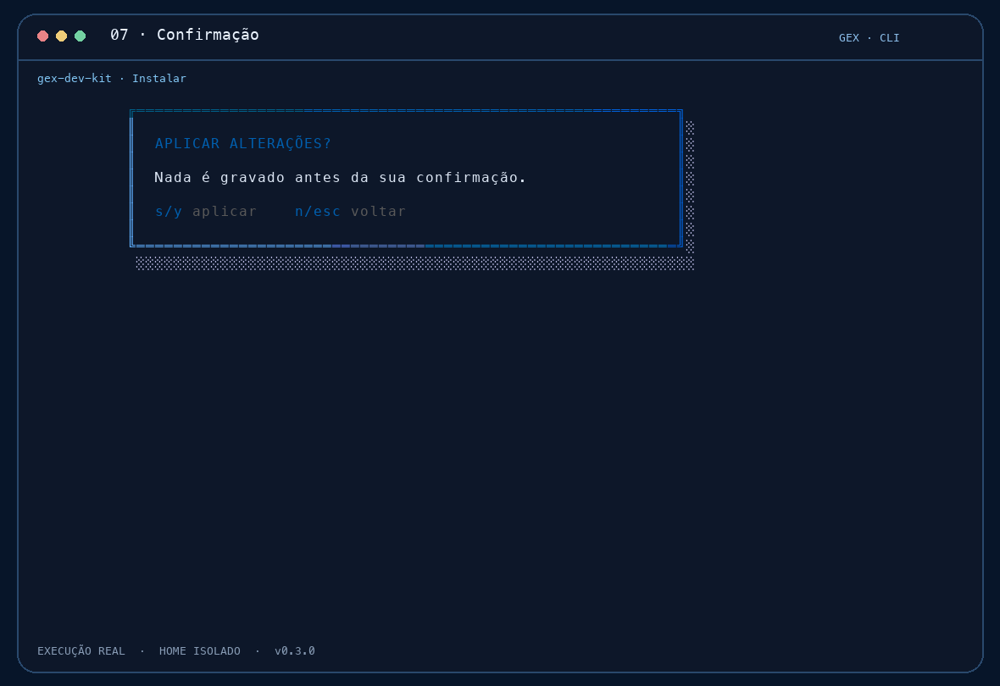
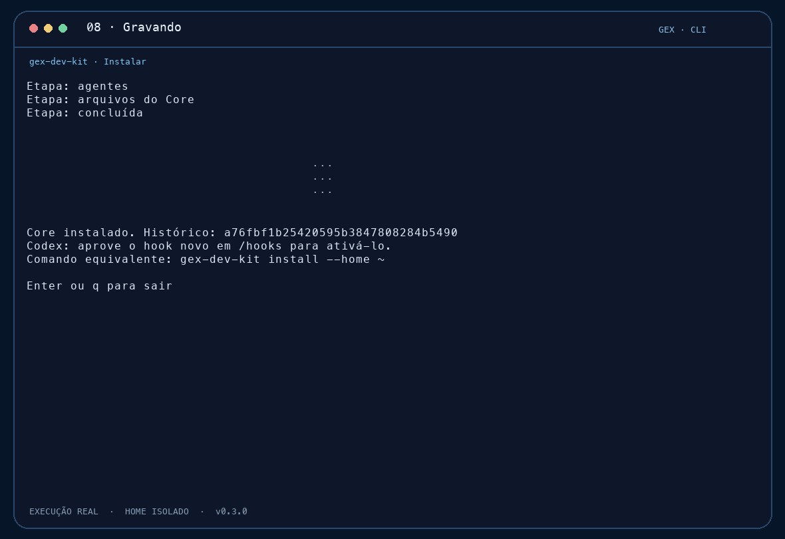
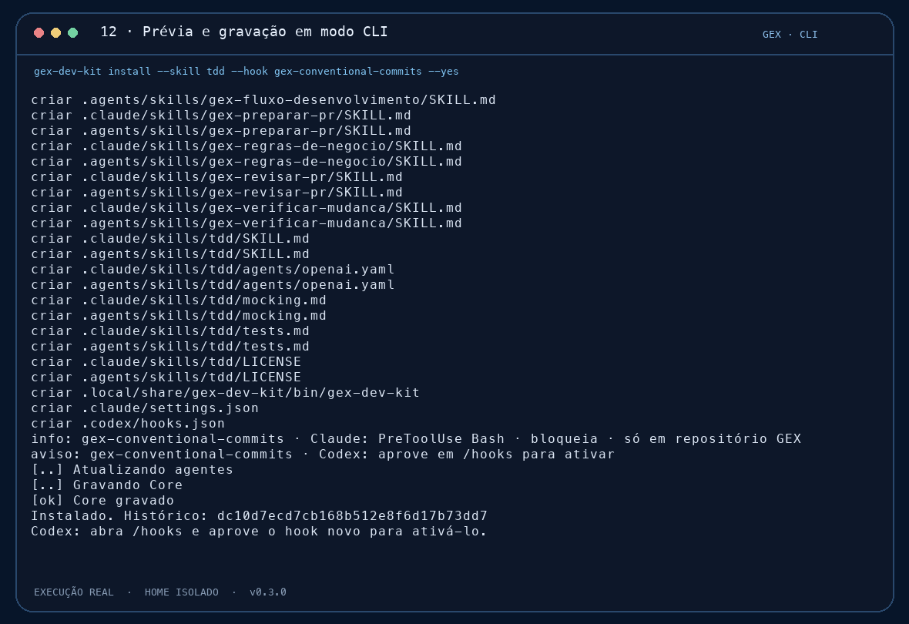
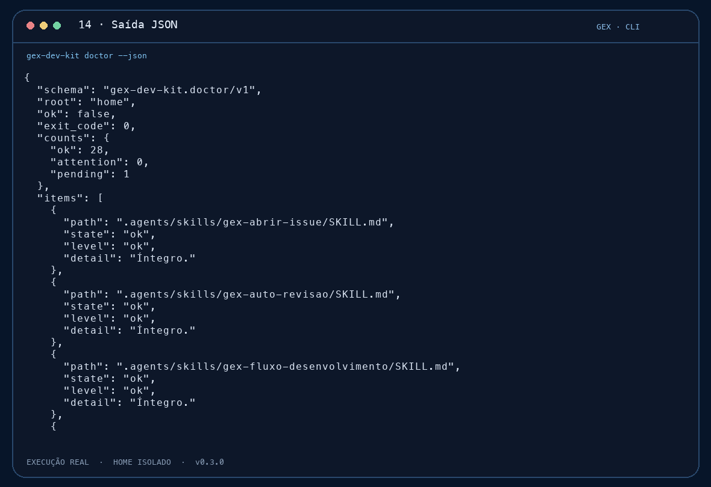
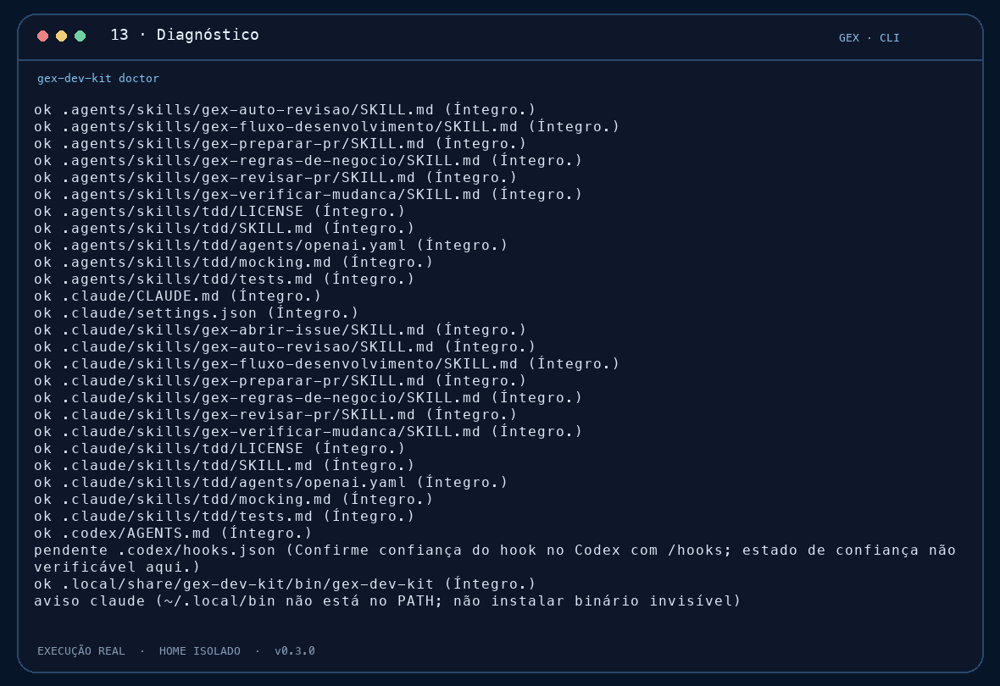
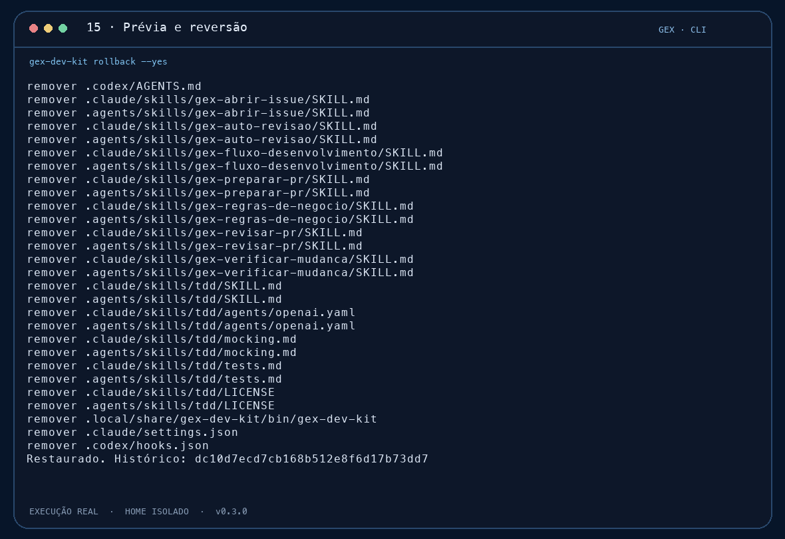
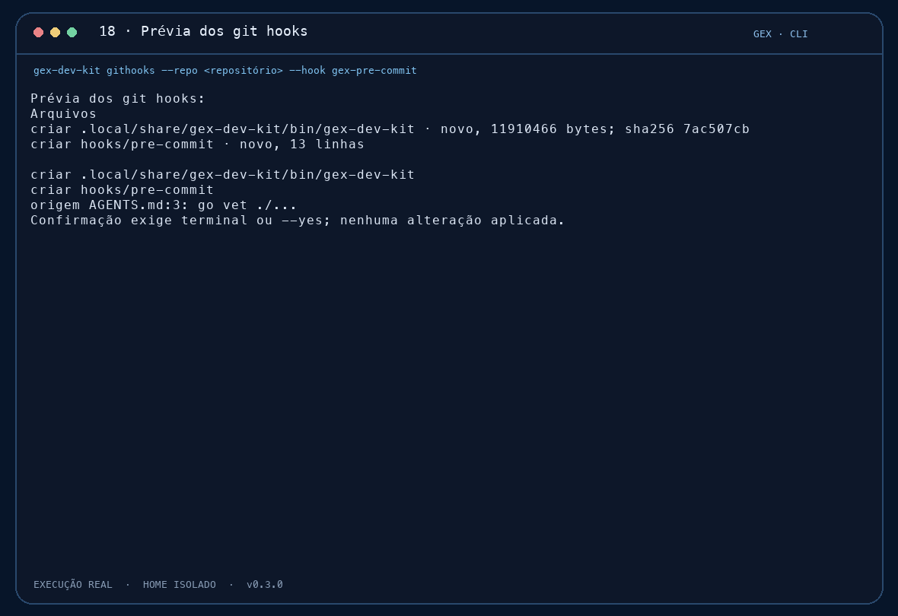

Guia do GEX Dev Kit v0.3.0 · capturas e vídeo feitos com a CLI real em HOME isolado
Guia do GEX Dev Kit
O kit instala o Core GEX (instruções e 7 skills) no Claude Code e no Codex. Skills e hooks opcionais entram por escolha. Antes de gravar, a CLI mostra a prévia. Qualquer instalação pode ser revertida.
Vídeo
Roteiro de cerca de 105 segundos, com legendas em português. Gerado a partir de docs/guides/composition.
1. Entrada
Ao abrir a CLI sem argumentos, o menu mostra o estado do Core, dos agentes e dos hooks.



2. Instalação guiada
A opção Instalar abre o assistente. O destino é o HOME atual. Depois vêm as skills e os hooks por grupo. Ao final, a CLI pergunta se pode atualizar os agentes instalados.





A tela final mostra o comando equivalente com a opção de HOME. Nos guias, ela aparece como --home ~, para não expor o caminho da máquina.
3. Modo CLI
Os mesmos passos rodam sem tela. Sem --yes, a CLI mostra a prévia e não grava.
gex-dev-kit skills
gex-dev-kit hooks
gex-dev-kit install --skill tdd --hook gex-conventional-commits --yes
gex-dev-kit doctor
gex-dev-kit doctor --json
skills
install --yes
doctor --json4. Diagnóstico e reversão
doctor confere os arquivos gravados e o estado dos agentes. Um aviso não significa que tudo está verde. Leia cada linha.
gex-dev-kit doctor
gex-dev-kit rollback --yes
doctor
rollback5. Catálogo, Addons e Design System


addons caveman: mostra o comando oficial. Não executa.
ds: vitrine visual de referência6. Git hooks por repositório
Os hooks de Git só são gravados com --repo e confirmação. Sem isso, a CLI mostra apenas a prévia.
gex-dev-kit githooks --repo <caminho-do-repositorio> --hook gex-pre-commit --pre-commit-run "go vet ./..."
githooks: prévia7. Tabela das telas
| Tela | Arquivo | Origem |
|---|---|---|
| Entrada e ajuda | home-entrada, home-pronta, home-ajuda | TUI, sem argumentos |
| Instalação guiada | assistente, previa, confirmar, gravando, concluido | TUI, opção Instalar |
| Catálogo | catalogo | TUI, opção Catálogo |
| Modo CLI | cli-skills, cli-install, cli-json, doctor, rollback | Comandos em HOME isolado |
| Addons, vitrine, hooks | addons, ds, githooks-previa | Comandos da CLI |